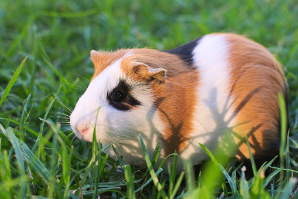
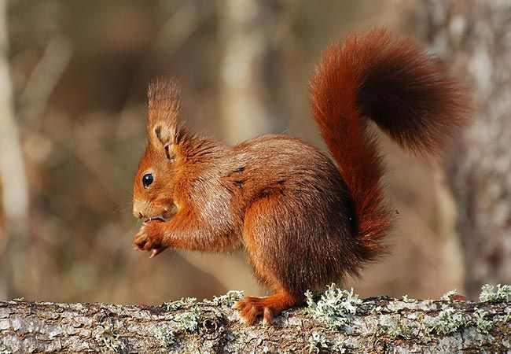
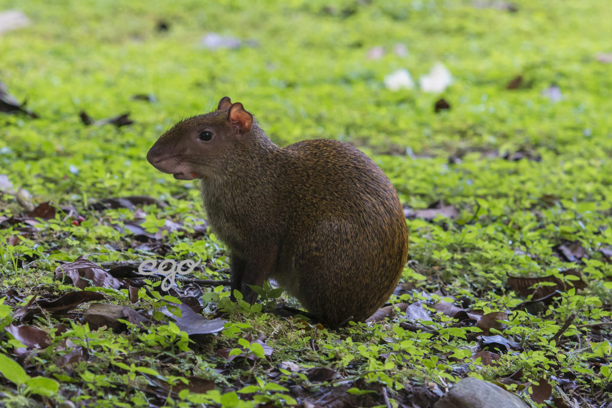
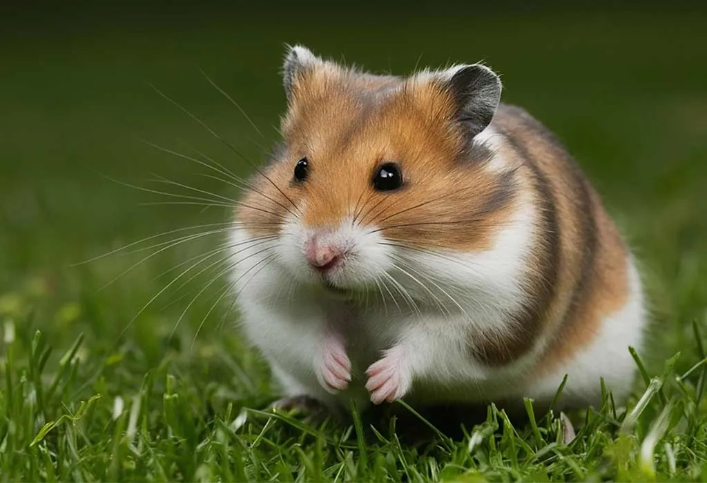
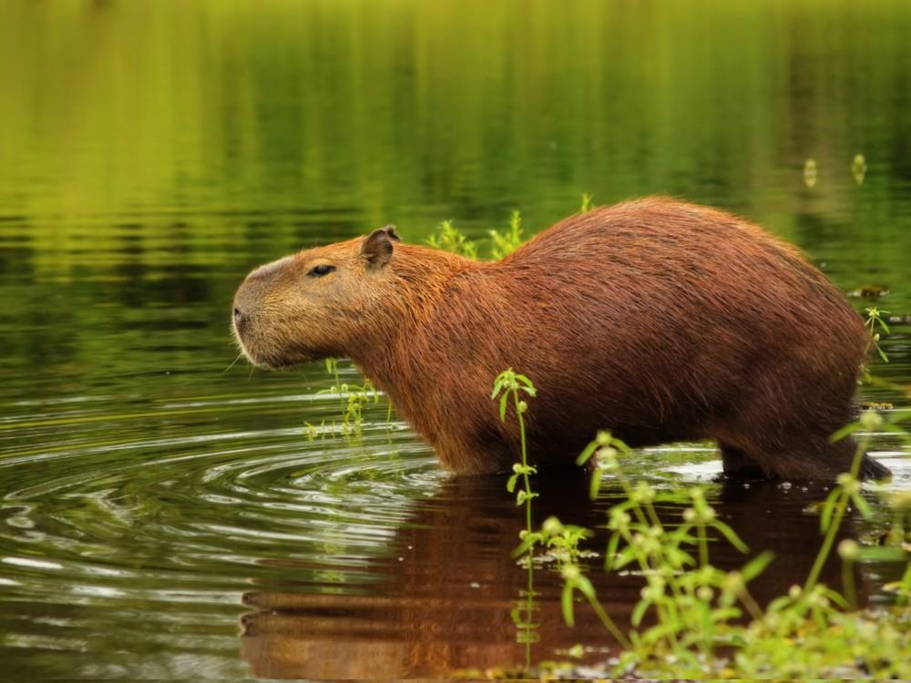
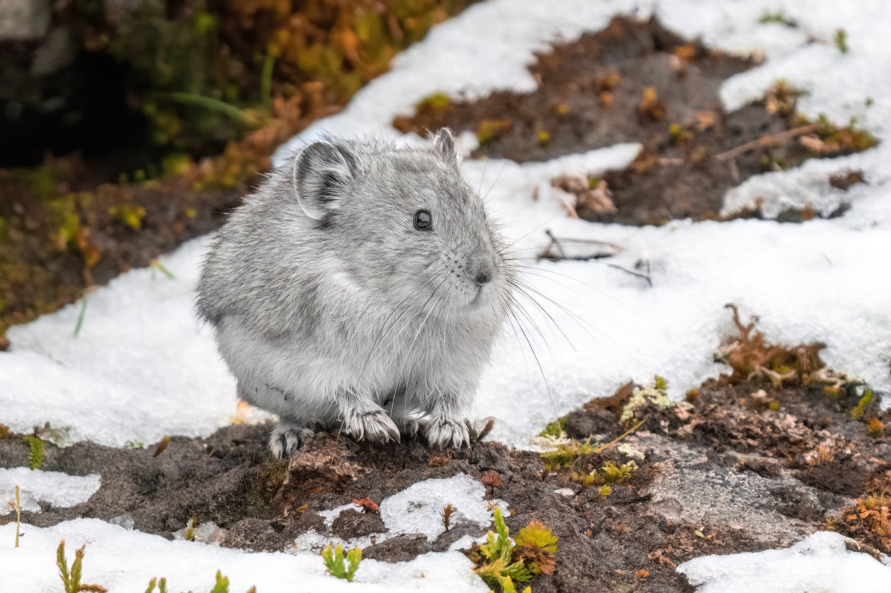
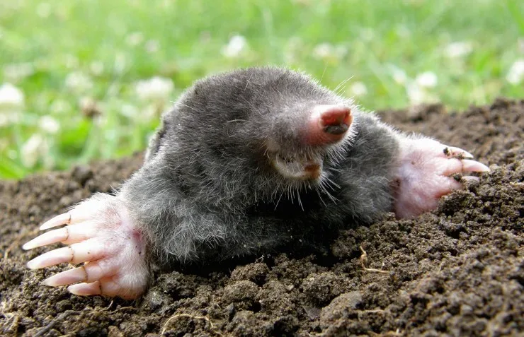
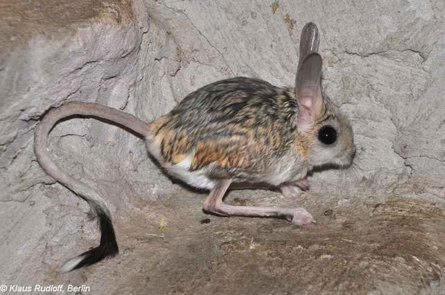
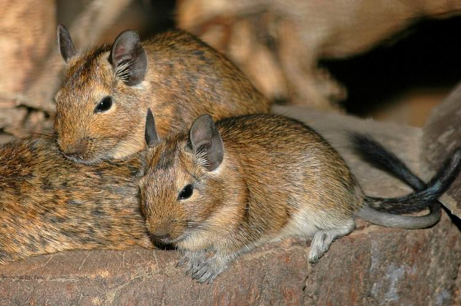

Cuyo (Cobaya)
Dulce, sociable y muy expresivo. Los cuyos son conocidos por sus sonidos adorables y su carácter amistoso.

Ardilla Roja
Rápida, juguetona y amante de los árboles. Es famosa por su cola esponjosa y su habilidad para trepar.

Acure
Pequeño, rápido y muy tímido. El acure es un roedor común en zonas rurales de Venezuela. Se caracteriza por su pelaje suave y su habilidad para esconderse rápidamente entre la vegetación. Es un animalito nervioso pero muy ágil.

Rata Dumbo
Inteligente, cariñosa y muy noble. A pesar de su fama, es uno de los roedores más afectuosos y fáciles de entrenar.

Hámster Dorado
Pequeño, tierno y muy activo. Es un roedor perfecto para hogares tranquilos y personas que disfrutan observar su energía.

CHIGÜIRE (Capibara)
Tranquilo, sociable y amante del agua. El chigüire es el roedor más grande del mundo y vive en grupos cerca de ríos y lagunas. Tiene un carácter muy pacífico y es conocido por convivir con muchas otras especies sin problemas.

Lemming Ártico
Peludito, resistente y adorable. Sobrevive en climas extremos y vive en grandes colonias.

Topo Europeo
Ciego, suave y trabajador. Pasa su vida cavando túneles bajo tierra con una habilidad increíble.

Jerbo del Desierto
Pequeño, veloz y muy curioso. Sus largas patas le permiten dar saltos impresionantes.

Ardilla Listada (Chipmunk)
Rápida, juguetona y muy expresiva. Sus mejillas se inflan cuando guarda comida.

Degú Chileno
Sociable, activo y muy limpio. Vive en grupos y tiene una personalidad encantadora.

Ratón Albino
Tierno, tímido y muy inteligente. Su color blanco y ojos rojos lo hacen inconfundible.